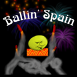
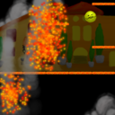
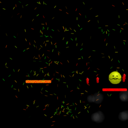
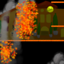
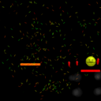
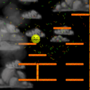
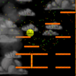

Ballin Spain is a game about bouncing a guacamole-colored ball off the top of the screen as quickly as possible. Some of the platforms in the game are not what they seem.
Ballin Spain was created for the 2010 Global Game Jam, where the theme was deception. It was developed by a team of 6:
- Brian Wilbur
- Chris Mondok
- Ian Dunlap
- Ivan Potosky
- Kevin Anderson
- Zach Pinner
This was my first game jam, and while I was skeptical going in, I have attended every game jam I can since. I highly recommend attending one, even if you think you have little to bring to the table. You'd be surprised what you can learn, and they're great fun.
Images

 




 
